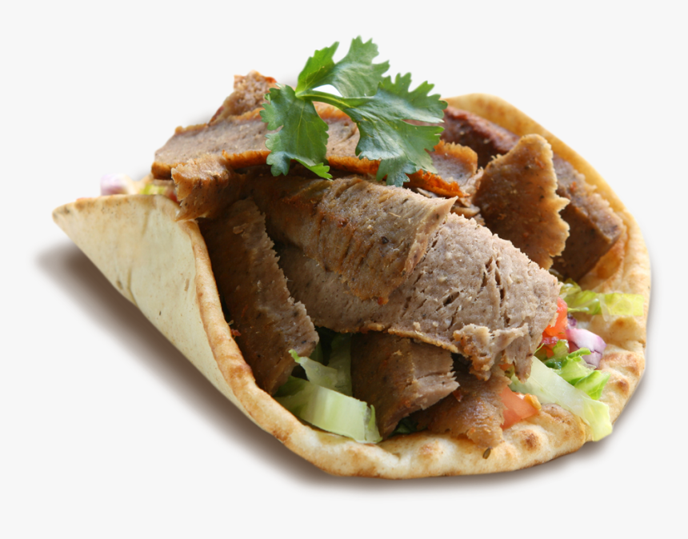

Gyro Recipe

Description
Gyros are a delicious meal. They are generally composed of shredded lamb or beef that is cooked over an open fire, which is then wrapped in pita bread. Garnishes are often added, such as tomatoes, lettuce, onions, and tzatziki sauce.
Ingredients
- 1/4 cup chopped red onion
- 1 tablespoon minced garlic
- 1 tablespoon dried marjoram
- 1 tablesppon ground dried rosemary
- 2 teaspoons kosher salt
- 1/2 teasppon ground black pepper
- 1 pound 93%-lean ground beef
- 1 pound ground lamb
Steps
- Preheat oven to 350 degrees F (175 degrees C)
- Mince onion. Scoop onio into a piece of cheesecloth and squeeze moisture out. Further mince onion with garlic, then add marjoram, rosemary, kosher salt, and black pepper. Mince until well integrated.
- Gradually blend ground beef and ground lamb with the onion and seasoning mixture by alternately adding small amounts of each meat to the mixture and processing until well incorporated before adding the next batch.
- Bake in the preheated oven until no longer pink in the center, about 75 minutes. An instant-read thermometer inserted into the center should read at least 175 degrees F (80 degrees C). Drain grease and slice thinly to serve.